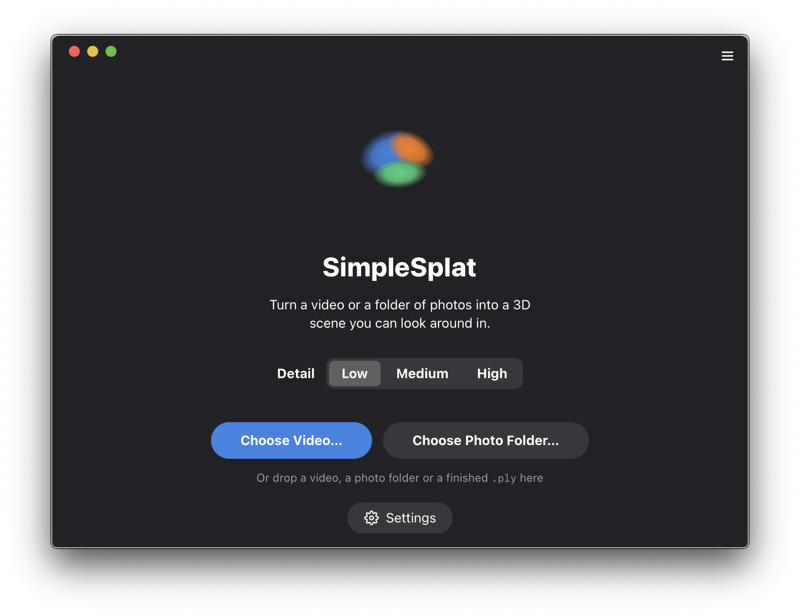

SimpleSplat is the easiest desktop application to create Gaussian Splats on your own hardware. Creates a splat in 3 clicks.
DownloadFor macOS, Windows and Linux

A video or a folder of photos. It will pick the sharpest frames of the video automatically.
Depending on your machine and the quality settings it can take a while. (~16 minutes for a short video on Medium on an M5 mac)
Either use the built-in viewer or use it somewhere else. The splat is saved as a standard PLY.